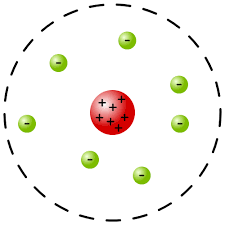
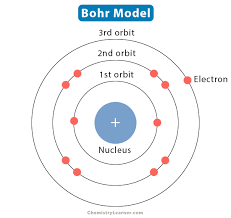
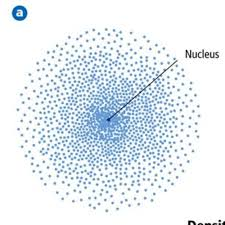
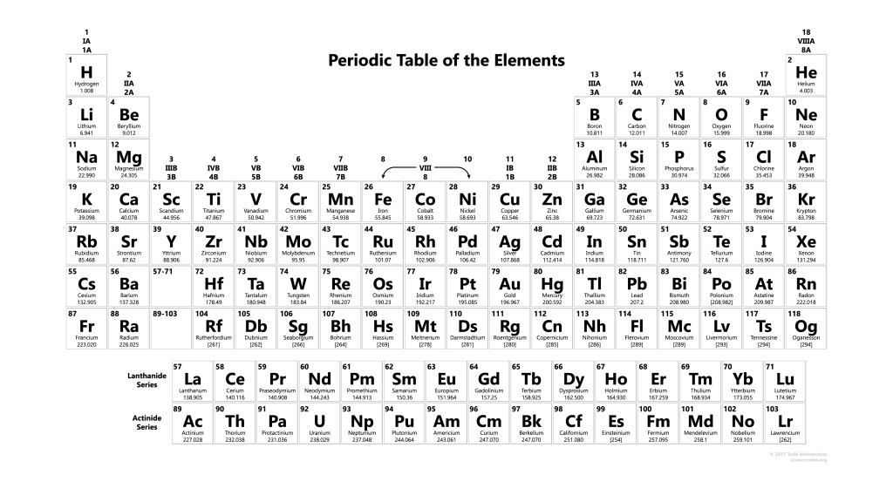
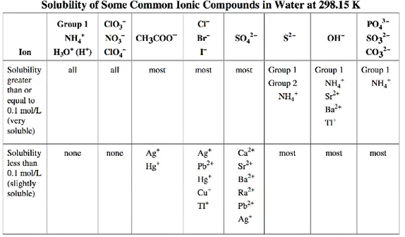
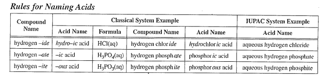

All elements of chemisty that you should know for the final
Part 1-WHMIS Symbols
WHMIS symbols
are used everywhere to provide any information relevent to controlled
products in the workspace
Icon
Information
Flammable Material
Potental fire hazard, Catches fire spontaneously if exposed to air,
heat, or sparks as a result of friction
Compressed Gas
Explosion danger- gas under pressure. May Explode if heated,
punctured, or dropped
Oxidizing
Fire and/or explosion risk. In the presence of flammable or
combutible material. May cause fire or enhance the combustion of
other materials
Harmful or Fatal
Acute toxicity. Potentially fatal poisonous substance if inhaled,
swallowed, or through skin contact enven in small amounts.
Corrosive
Causes severe skin burns and eye damage. Is corrosive to metal.
Explosion Hazard
Risk of explosion due to fire, shock, friction, heat, or puncture
Harmful
To skin, eyes, or respiratory system. Fatal in large quantities.
Hazardous to the Ozone Layer
Health Hazard
May cause allergic reaction, cancer, birth defects, damage organs,
or harm fertility.
Harmful to the Environment
And/or aquatic life with long-lasting effects
Biohazardous Infectious Material
For organisims or toxins that can cause serious disease in people or
animals resulting in illness or death
Historcal Models of the Atom
Model of atom
Key features
Why model was rejected or modified
Dalton Model
-matter made of atoms
-atoms are like spheres
-different atoms have different masses and properties
-compounds form when differnt atoms combine
-reactions change how atoms are grouped
-didn't explain the internal structure of the Atom (subatomic
particles)
Thomson Model
-atom is a positive sphere with negative electrons embedded in it
-didn't explain how the e-'s were organized
-didn't explain the positive nucleus

Rutherford Model
-nucleus is a small dense region at the center of the atom
-nucleus contains positive particles called protons (p+)
-most of the atom is empty space
-e-'s orbit the nucleus
-couldn't explain why an element can emit different colours of light

Bohr Model
-electrons exist in energy levels
-electrons can move from one energy level to another, but can't be
in between levels
-calculations only work for hydrogen

Quantum Model
-electron cloud model
-can't know where an e- is at any given moment, but you can know the
area where it's most likely to be found
-this is the currently accepted model
Periodic Table
Elements can be classified into distinct groups based on their chemical &
physical characteristics
State
Appearance
Conductivity
Malleability and duct ability
Metals
(S)
Shiny
High
Very/High
Non-metals
(S) (L) (G)
Dull, Brittle
Non-conductive
Low (Brittle, Non-ductile)
Metalloids
(S)
Some are shiny, some are dull
Semi-conductive -pour conductors of heat
Low, not ductile
Metals in the first column or Group 1 of the periodic table (i.e.
lithium, sodium, potassium, rubidium, cesium, and francium)
These elements react vigorously, even violently, with water and must be
stored in oil to prevent contact with the moisture in the air
These elements are never found in their pure form naturally
Elements in the second column or group 2 of the peroidic table all fall
into this family
These elements may be made into rods, wire, or plate. These elements are
less reactive that the alkali metals
When the surface of these metals comes into contact with oxygen in the
air, a strong protective oxide coating is formed. This coating must be
removed for further reaction to occur
This series includes all elements in Groups 3-12 and the sub series
Lanthanides and Actinides (inner transition metals)
In general these elements are known for their hardness, high density,
high melting and boiling points and heat conduction although there are
exceptions
Some of these elements form Coloured ions
The reactive non-metals in Group 17 of the periodic table. These
elements are so reactive that they are never found as elements in nature
Elements belonging to Group 18
These elements are very un-reactive, however, they are not non-reactive
as compounds containing these elements have been synthesized. There are
no naturally occurring compounds that are made up of these elements

Naming Ionic Compounds:
(Compounds composed of a metal and a non-metal)
Rules for naming
Name the metallic ion (Cation) first, followed by the non-metallalic
(Anion)(the non-metallic ion ends in "ide")
Ionic compounds always start with a metal or an ammonium ion
Balancing Ionic compounds
When given the name, write the symbol and charge for each ion
Remember all compounds are electrically neutral
Use subscrpits to equalize the total number of positive and negative
charges
The Stock System
The Stock System: Some ions can exist with differnet ion charges in
different situations. For example, iron can exist as Fe3+ and
Fe2+. To distinguish one from the other, Roman numerals are
used in the name of compounds that are made with ions that can have
different charges
Polyatomic Ions
All polyatomic ions but Ammonium are anions, which means they are at the
end of the compound.
When there are multiple of the same ployatomic ion in a compound, use
brackets to show the entire ion is modified by the subscrpits
Traditionally, the most common of a polyatomic ion type, like nitrate
and nitrite, with end with -ate.
This means that nitrate, phosphate, chlorate, and sulfate are the most
common pairings of nitrogen, phosphorus, chlorine, and sulfer with
oxygen, respectively
If you know a ployatomic anion's oxygen count, you should be able to
tell what all other counts will be in that family
The sufixes of the different anions with oxygen tell you how many oxygen
ions are in the complete ion. The hierarchy goes as follows:
-Per____ate
-____ate
-____ite
-Hypo____ite
The oxygen goes down as you go down this list, and goes up when you go
up the list
For example, if you know nitrate is NO3, then you can know
pernitrate is NO4, nitrite is NO2, and hyponitrite
is NO (No subscrpit number means there is one of that ion)
Hydrated Compounds
When found in nature, compounds are combined with water when formed
Naming Rules
The first half of the name is the complete ionic compound name
After the ionic compound, the amount of water molecules is denoted by
the atomic prefix followed by "hydrate"
For example, with copper II sulfate with 5 water molecules per compound
molecule, you write Copper II Sulfate Pentahydrate
Composition of Chemical Compounds
When single replacement or double replacement reactions occur, they occur
in water

In Science 10, this table has all of the elements you will need to use
it for
To use the table properly, begin with identifying what elements are in
the compound, using the anion is easier with this chart. We shall use
NaCl for this example
Then, look for the anion along the top of the chart. The first two
columns are cations, so look at any of the other ones to find the ion.
For our example, NaCl, Cl is in the 4th column from the left
Now look at the two rows beneath your ion. These rows specify whether a
compound is an aqueous solution, with your ion in the top row, meaning
high solubility, or a precipitate (solid), with your ion being in the
bottom row, meaning low solubility. For our example, since Na isn't
shown in the bottom row, it is included in the top. This means NaCl in a
reaction will be aqueous and has high solubility
Naming Acids
Acids are ionic compounds that begin with H or end in COOH, and are always
aqueous

Molecular Compounds
Molecular compounds are composed of only non-metals, and use the atomic
prefix system as well, however the prefixes refer to the subscript number,
rather than in hydrates where it referes to the coefficient
NOTE: The mono prefix is only used for the second element where
neccessary
There are a few molecular compounds that you need to memorize the formula
of. This includes:
Water H2O (l)
Ammonia NH3 (g)
Ozone O3 (g)
Methane CH4 (g)
Propane C3H8 (g)
Methanol CH3OH (l)
Ethonal C2H5OH (l)
Glucose C6H12O6 (s)
Sucrose C12H22O11 (s)
Carbon Dioxide CO2 (g)
Carbon Monoxide CO (g)
Hydrogen Peroxide H2O2 (l)
In addition to these molecular compounds, there are other polyatomic
molecular compounds